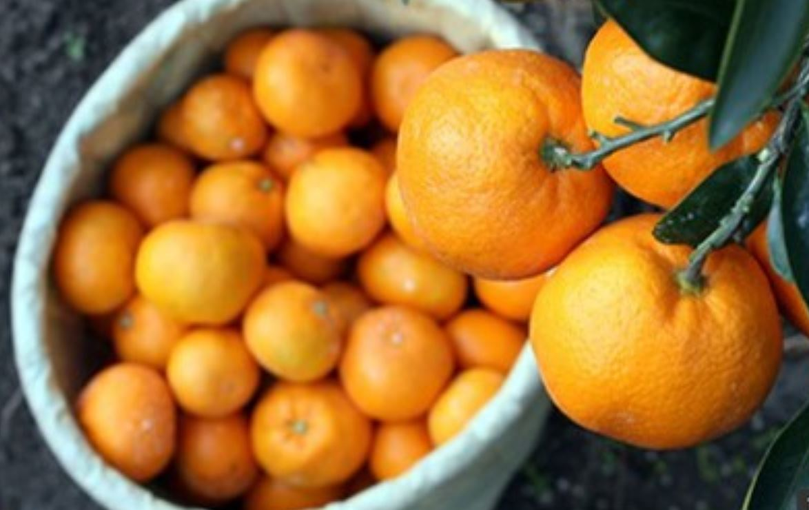
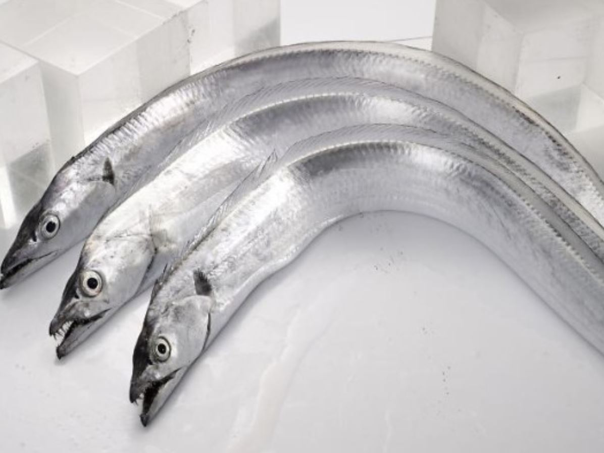
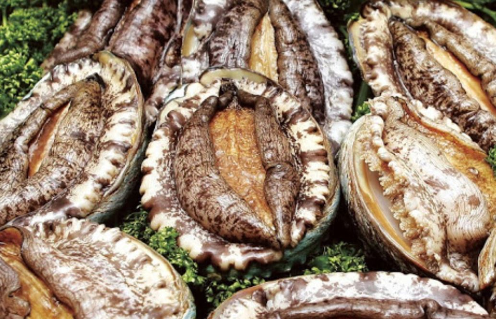

| |
|---|---|
|  | 상품명 : 감귤 |
| 원산지 : 제주도 | |
| 제주감귤은 제주도의 토양이 비옥해 당도가 높고 광택이난다. | |
| 구매링크 | |
|  | 상품명 : 갈치 |
| 원산지 : 제주도 | |
| 리진, 페닐알라닌, 메티오닌 등 필수아미노산이 고루 함유된 단백질 공급식품으로 특히 라이신 함량이 높아 성장기 어린이의 발육에 좋다. | |
| 구매링크 | |
|  | 상품명 : 전복 |
| 원산지 : 제주도 | |
| 제주전복은 우리가 흔히 접하는 참전복에 비해 성장 속도가 더딘데다 거센 해류를 견디기 위해 힘이 좋다. 그래서 차진 식감을 자랑한다. | |
| 구매링크 |